Revised January 2010
If you are a Cocoa developer, you already know that the dynamic nature of Objective-C and Cocoa is what makes them so flexible and powerful. In terms of development tools, the power of a dynamic object-oriented environment like Cocoa translates into original tools like Interface Builder or F-Script, an open source project that is presented in this article. F-Script is an integrated set of tools that makes it possible to interactively explore and manipulate Cocoa objects as well as script them using new high-level programming techniques. This article shows you how to use some of its most impressive features and demonstrates how it can be a useful addition to your developer toolkit.
F-Script can be downloaded at http://www.fscript.org.
The object browser is the central tool in F-Script for exploring and manipulating objects graphically. The general principle governing usage of the object browser is very simple:
This provides unified graphical and interactive access to objects — a handy way to explore and play with frameworks, test the classes you are developing or interactively use objects in the context of your application.
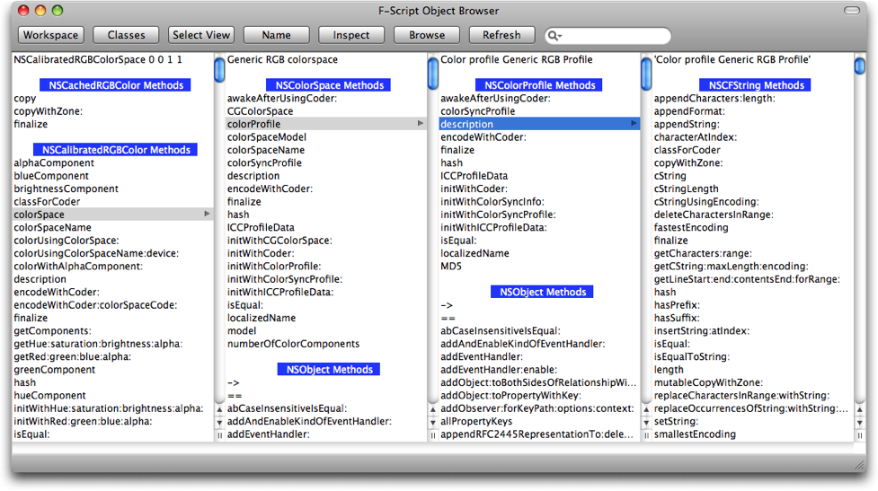Fig. 1. The object browser in action
If you are using the FScript.app application there is a menu item "Open object browser" that does just that, displaying all the objects defined in your F-Script workspace.
In any case, you can also open the browser by executing a simple F-Script instruction:
sys browse will open the browser in your current workspace.
sys browse:anObject, in which anObject can be any F-Script expression, will open the browser on anObject.When the browser opens, it displays a textual description of an
object or list of objects. To do this, the browser asks objects for
their description by sending the message printString. If you are familiar with F-Script, you know that all objects respond to this message, whose default behavior is to call the debugDescription method if available or else to call the standard NSObject method description.
When you are browsing your workspace, the name of each variable is displayed to the left of the corresponding object description.
Once you have identified the object you want further explore or manipulate, you just need to select it by clicking on it.
When you select an object, the browser populates a new column with the description of the object and a list of methods implemented by this object. The methods are grouped according to the class hierarchy for the selected object: first, the methods for the object class, then the methods at superclass level, and so on... In each group, methods are displayed in alphabetical order. In the current version, it is possible for a method to be present in multiple groups, if it has been redefined in subclasses.
To invoke a method on the selected object, you just click on the method name. F-Script will then invoke the method and display the result in a new column of the browser.
If the method takes arguments, F-Script will open a sheet into which you will be asked to enter arguments. You provide each argument by typing an F-Script expression (this can be an arbitrary complex expression).
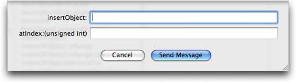Fig. 2. The object browser asks for arguments.
If an error occurs during argument evaluation or method invocation, the browser will open an alert panel to inform you of the problem.
Method invocation follows the F-Script rules. For instance, if the result of the Objective-C method you've called is not an object, it will be automatically mapped to an object in accordance with the standard F-Script rules (these rules, described in the F-Script manual, are roughly the same as the Cocoa KVC mapping rules). For instance, if a method returns a C numerical value (int, float, double, etc.), this value will be mapped to an NSNumber. If a method returns a C struct like an NSPoint or an NSRect, this struct will be mapped to an NSValue. This mapping has to occur because F-Script is a pure object language, whereas Objective-C has object and non-object types. It is bidirectional: it occurs when returning from an Objective-C method and also when calling an Objective-C method.
In a Cocoa application, each graphical component corresponds to an object (typicaly, an NSView). The object browser lets you select a graphical component and browse the relevant object. To do so, first click the Select View button. The cursor changes into a little cross and then all that is required is to click on the visual object that you want to browse. To provides you with immediate feedback and to show the surface covered by the views on screen, the color of the view that is under the cursor is temporarily modified as the cursor moves. A HUD near the cursor displays information about the view underneath. 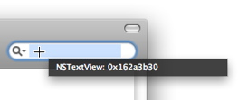
Fig. 3. Selecting a view on screen.
You can exit this graphical selection mode without actually performing a selection by pressing the ESCAPE key.For some often-used Cocoa objects such as NSViews or NSCells, the object browser is able to display additional information. This information is shown before the list of the object's methods, and can be directly selected in order to explore the object graph.
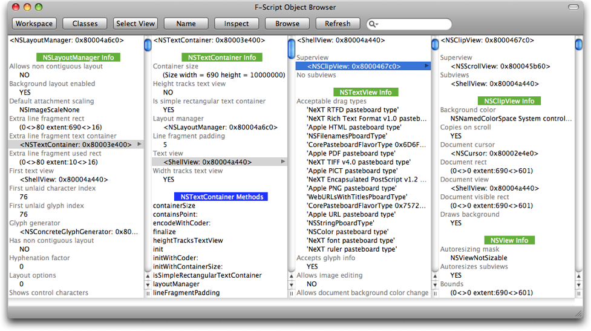Fig. 4. Browsing additional object information.
Design patterns used by Cocoa, such as the view hierarchy and the responder chain, are recognized by the browser, enabling it to display the objects related to these patterns in a clear, accessible way. Thus, for a given NSView, you can view all its superviews at a glance and easily explore the view hierarchy. Likewise, for a given NSResponder, you can directly view the corresponding responder chain.
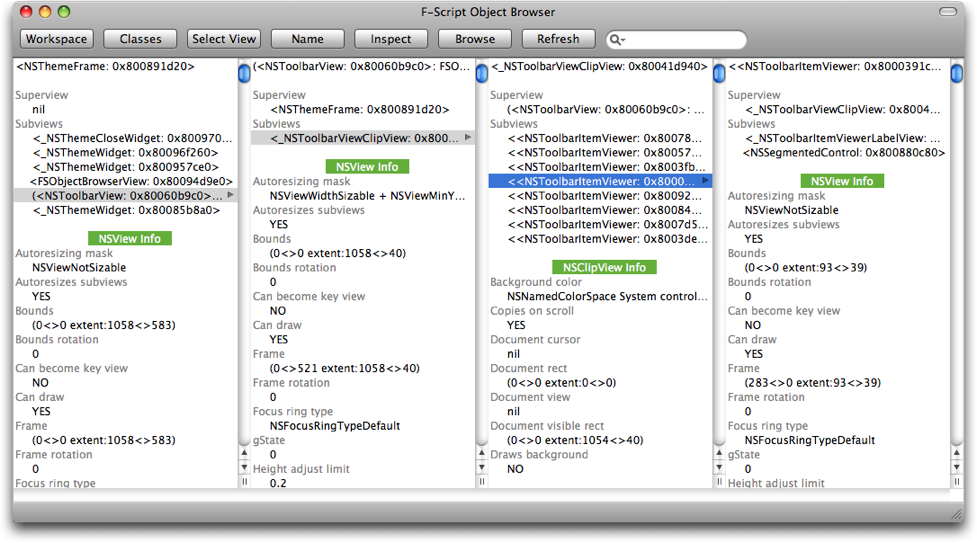Fig. 5. Browsing a view hierarchy.
The browser also recognizes Cocoa bindings. Whenever you are browsing an object that exposes bindings, the object browser displays complete information about the bindings and lets you navigate the MVC object graph.
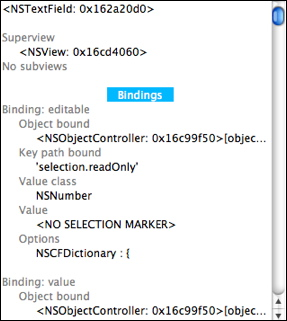Fig. 6. Browsing Cocoa bindings.
Finally, declared properties (introduced in Objective-C 2.0) also get displayed in the browser.

Fig. 7. Browsing properties.
While this almost always works well, automatically introspecting values of declared properties can be unssafe and can result in undefined behavior. Indeed, it requires calling properties accessors to get at the values, which might not always be a valid action (while most API avoid such brittleness, a class can, in principle, require as a precondition that a given property is read only when the object is in a given logical state). To cope with such situations, F-Script lets you suppress automatic property introspection, through an option in the preference panel.
In F-Script, C pointers are represented by FSPointer instances: when
we invoke a method that returns a C pointer, F-Script automaticaly boxes
it into an instance of FSPointer (or one of its subclasses) before
handing it to us. We can dereference pointers explicitely with the at:
method in order to look at the content of the referenced memory.
Beside, when possible, the object browser automatically displays the
content of the memory.
Fig. 8. Browsing pointers.
For some pointers, the object browser internaly uses the malloc_size() function to determine the size of the memory block to display. Consequently, it might display memory contents that extend past the end of the memory block actually requested by the application at allocation time. In this case, some items at the end of the displayed content will just be the random values that happen to be there in memory.
As you move the mouse pointer, the bottom bar of the browser shows you a more complete description of objects and methods than the one in the columns, which is sometimes limited by the column size.
An F-Script object browser is always associated with an F-Script workspace (a workspace is simply a set of associations between names and objects). You can examine your current workspace and browse objects in it by clicking on the Workspace button.
Even if you haven't assigned any objects to identifiers, you may find some predefined objects in your workspace. For instance, there is the sys object, which represents the workspace itself and can be used to manipulate it programmatically.
You can assign the current selected object to a name in your workspace, by clicking on the Name
button in the browser's toolbar, and typing the chosen name in the
sheet. This operation is equivalent to the assignment instruction ":=" in the F-Script language.
Fig. 9. A sheet asks for the name of the object.
You can browse the classes linked to the executable from which you are using the F-Script object browser (since F-Script is offered as an embeddable framework, you may want to use it from different applications). To start browsing the classes, just click on the Classes button.
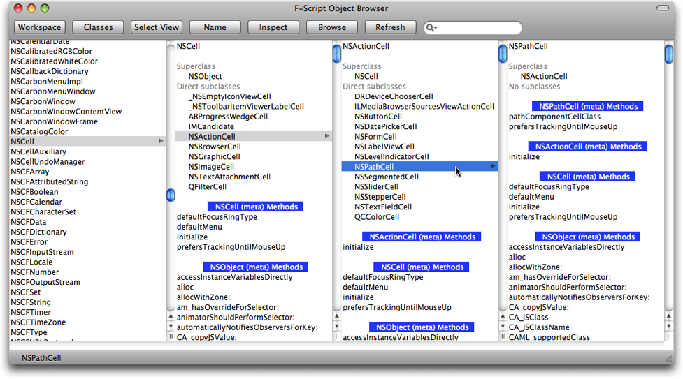Fig. 10. Browsing classes.
The rightmost column displays the list of classes. When you select a class, the browser displays:
This makes it easy to navigate the class hierarchy and to access class methods. In fact, you manipulate classes through the browser in the same way as other objects. This is because Cocoa classes are themselves regular objects. Indeed, each class is itself an instance of another class (called a meta-class) automatically created by the object system... and meta-classes are themselves objects. Since F-Script makes it so easy to browse these different levels, it can be useful to have a clear view of the topology of the Cocoa class system. We illustrate it below, using the Cocoa NSBox class as example.
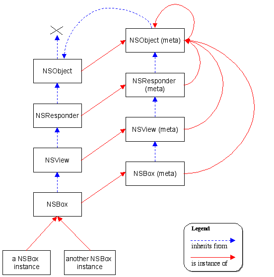Fig. 11. Topology of the Cocoa class system.
A few remarks:
superclass message.superclass message returns nil.There are a few classes that you can't use with F-Script, and therefore can't browse. This includes classes not conforming to the NSObject protocol (likes those inheriting from the "old" Object class), and some special system classes like _NSZombie.
The browser displays a great deal of information. For example, an object can have hundreds of methods, or a list of classes can have thousands of entries. The search field in the toolbar lets you filter all the elements displayed by the browser, so that you can easily find a method, class, specific information, etc. In the example below, we have asked the browser to display the elements containing the character string "layout".
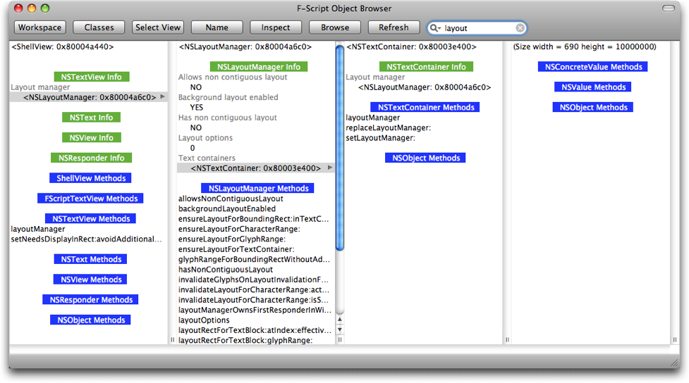Fig. 12. Using the search field.
It is extremely easy to use the search field in the browser, and there is no need to click in the field to activate it before entering a search term. When the browser window is active, just enter the expression being searched for and it will automatically be applied. Hit the Escape key to delete the search expression.
You can inspect an object by double-clicking on it or by selecting it and using the Inspect button. A generic inspector is provided, while some objects offer more specific inspectors. For example:
You can easily provide an inspector for you own objects, by implementing a -(void)inspect method on your objects.
It is also possible to open a new object browser for the selected object by clicking on the Browse button.
Objects displayed in the browser can be modified at any time in a
number of ways: events, callbacks, sending a message with side effect
from the object browser or from the F-Script shell, etc.
It is important to note that the browser doesn't automatically update
its display when such modifications are made. However, the Refresh
button will let you refresh all the information displayed in the object
browser. Selecting an object and opening an inspector for it will also
let you see an updated description of the object.
In the next sections we will introduce some features of the F-Script graphical environment that let you associate F-Script code with UI elements. So it is time for a quick introduction to the F-Script syntax. The good news is that, firstly, the F-Script syntax is extremely simple. This is because F-Script is a pure object language where everything is manipulated uniformly by sending messages. Secondly, it is well suited to Cocoa because is uses the same syntax as Objective-C for message sending. Thirdly, F-Script is a Smalltalk dialect. So when you learn it, you're also learning Smalltalk, which is something that, trust me, you will be eternally grateful for.
You can interactively experiment with coding in F-Script using the F-Script console. For instance, you can copy/paste the examples in the console and modify/execute them.
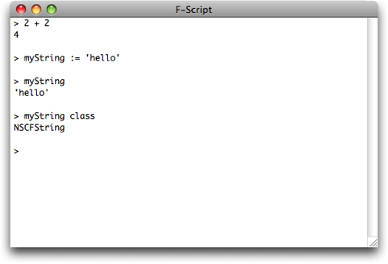Fig. 13. The F-Script console lets you evaluate F-Script code interactively.
Take a look at this example, in Objective-C and in F-Script:
| Objective-C | F-Script |
|---|---|
NSString *myString = @"hello"; | myString := 'hello'. |
As you can see, F-Script has no type declaration. Everything is an
object and is latently typed. The assignment operation is denoted by := rather than =
as in Objective-C. String literals are in simple quotes. Finally, the
instruction separator is a dot, like in English sentences.
The following example shows how to send a message to an object:
| Objective-C | F-Script |
|---|---|
[myString class] | myString class |
The difference between Objective-C and F-Script is that the latter does not use brackets around message-sending expressions. Both expressions will return a subclass of NSString. FScript is based on Cocoa, and uses the standard Cocoa objects for representing its fundamental datatypes (i.e. strings are NSStrings, numbers are NSNumbers, arrays are NSArrays, etc.)
| Objective-C | F-Script |
|---|---|
[myString isEqual:otherString] | myString isEqual:otherStringor myString = otherString |
The example above confirms that F-Script's message-sending syntax is the same as in Objective-C (minus the brackets). It also shows that F-Script supports binary operator syntax. In F-Script, binary operators are regular methods. They are automatically mapped to Objective-C keyword selectors at runtime.
If you are not already familiar with the Objective-C message syntax,
you will need some background information. Method names in Objective-C
and F-Script are like sentences with gaps in them. Each gap is prefixed
by a colon. When you invoke a method you fill the gaps with actual
values, creating a meaningful sentence. For instance, the name of the
method for inserting an object at a given index in an array is insertObject:atIndex:. In F-Script, to insert a given object at index three in an array you would write: myArray insertObject:myObject atIndex:3 whereas in a language like C++ or Java the call would look like myArray.insert(myObject,3).
This way of denoting method names and method invocation comes from
Smalltalk and is one of the most appreciated features of Objective-C, as
it makes the code very expressive and less error prone. When you create
your own methods, you should strive to name them in such a way that
they form expressive sentences when invoked.
In the following example we see that, as in Objective-C, messages can be strung together.
| Objective-C | F-Script |
|---|---|
[[myString class] superclass] | myString class superclass |
Expressions are evaluated from left to right, giving us the same semantics as in Objective-C. In addition, there is only one simple precedence rule to remember in the whole F-Script language: unary messages (i.e. messages with no argument) are executed first, then binary messages (i.e. things like +, *, etc.), then keyword messages. If you want to change the order of evaluation, you can use parentheses to delimit a message, as shown in the example below.
| Objective-C | F-Script |
|---|---|
[[myString substringFromIndex:2] length] | (myString substringFromIndex:2) length |
F-Script lets you access the Cocoa framework (and your own Objective-C objects) directly. In the following example we access the application kit:
| Objective-C | F-Script |
|---|---|
[[[NSApplication sharedApplication] mainWindow] setAlphaValue:0.5] | NSApplication sharedApplication mainWindow setAlphaValue:0.5 |
If you enter it in the F-Script console, the console will become semi-translucent. To return to a standard display, execute it again using 1 as the alpha value argument.
F-Script provides a handy literal notation for creating arrays. The folowing example also shows that double quotes are used to denote comments.
| Objective-C | F-Script |
|---|---|
/* Creating an NSMutableArray */ | "Creating an NSMutableArray" |
Speaking of arrays, it is worth noting that F-Script, unlike Objective-C or Smalltalk, is what is called an "array language". Combined with objects, array programming lets you manipulate whole collections of objects at once. This completely changes the way you think about your objects. Instead of thinking in OOAAT (One Object At A Time) mode, you can reason on whole sets of objects that you combine and manipulate using high-level operations. You are not required to use array programming with F-Script, but it is very handy in most situations.
The following example, showing instructions entered in the F-Script console and their result, illustrates how array programming can be used in F-Script. The ">" character is the shell's prompt.
> strings := {'Hi', 'mom', 'I am playing', 'with', 'F-Script'}
> strings length
{2, 3, 12, 4, 8}
As you see, the length message is actually dispatched to
each element of the array and the result is an array containing the
length of each element. This is a simple example of what is called a
"messaging pattern" in F-Script. In traditional object languages, the
basic syntactic structure makes it possible to specify the sending of a
simple message to a single object. F-Script adopts a new message-sending
paradigm that enables you to send a complex group of messages.
In the following example, we use a messaging pattern to send the setAlphaValue:0.7 message to all the windows in the current application and consequently change their transparency:
NSApplication sharedApplication windows setAlphaValue:0.7
Messaging patterns are just half of the story of array programming in
F-Script. Array programming is also based on high-level operations used
for manipulating collections (compression, transposition, scan etc.).
These operations are provided by F-Script in the form of methods
implemented in categories of Cocoa classes like NSArray. For instance,
F-Script adds the at: method to the NSArray class. This method, which can take an array of booleans as an argument, implements what is called compression
in array programming terminology. It selects elements in the receiver
for which the corresponding boolean in the argument is true. Compression
requires an array of booleans which specify the selection that has to
be made. messaging patterns mean that such arrays are easy to create, as
you can see in this example:
> strings length < 5
{true, true, false, true, false}
In the example above, the evaluation of the expression is a two-step process:
length message is sent to each string in the array, returning an array of numbers. < 5 message is sent to each number, returning an array of booleans (booleans are denoted by true and false but you can also use YES and NO as in Objective-C).We can make use of the resulting boolean array for compression:
> strings where: strings length < 5
{'Hi', 'mom', 'with'}
Here, we select the strings whose length is less than five.
This high-level programming model provided by F-Script is named OOPAL. It combines object-oriented programming and array programming into a unique model that makes it possible to express complex object manipulations easily. An introduction to this model is provided in the OOPAL paper at http://www.fscript.org/documentation/OOPAL.pdf. Since F-Script is built directly on top of the Objective-C object model and runtime, it lets you directly manipulate Objective-C objects using OOPAL.
Earlier, we referred to blocks and their ability to provide an inspector. Blocks are important objects in F-Script. As you will see in the next section, they are used by several graphical components in order to provide a high degree of flexibility. Moreover, they are one of the few fundamental structures of the F-Script language itself. So before going any further, let's see what blocks are.
Blocks, also known as "closures" or "lambda expressions", are objects
that contain some F-Script code. Usually, you create a block by
bracketing a segment of code. For example: [x := x + 1] is a block. You can execute the code inside this block by sending it a value message. The following example shows you how to experiment with blocks from the F-Script shell. The > character is the shell's prompt. Text between double quotes is comment.
> x := 1 "assigning 1 to x"
> x "evaluating x"
1 "x is 1"
> myBlock := [x := x + 1] "assigning the block [x := x + 1] to myBlock"
> x "evaluating x"
1 "x is still 1"
> myBlock value "executing the block"
> x "evaluating x"
2 "x has been incremented"
A block may have parameters. For example [:a :b| a + b] is a block with two parameters named a and b. When executing it, you have to supply the value for the arguments, using the relevant value... message. For example:
> myBlock := [:a :b| a + b]
> myBlock value:3 value:4
7
As you can see, blocks are regular objects. Because of that, they can
be used as arguments to methods; they can be archived, inserted into
collections, etc. This makes them a very powerful construct. One typical
way of using them is to make a block the target of an NSControl (e.g. a
button) and to configure the NSControl with the value: selector for its action message.
You can open an inspector for a block by double-clicking on it in the
object browser, or using the "inspect" button. You can also open the
inspector programmatically by sending the block an inspect message.
Fig. 14. The block inspector.
In the inspector you can edit the block. Some code-editing support is provided, such as a code completion system that you can invoke with the F5 key. Like Xcode, F-Script inserts placeholders for method arguments. You can move to the next argument placeholder by pressing Control-Slash.
A button in the inspector toolbar lets you check for syntax errors in your block. If a syntax error is found, it is highlighted in the code and a description of the error is provided. The block inspector also has a Run button in its toolbar. This button makes it possible to evaluate the block from the inspector itself. The result of the evaluation is then shown in the object browser. If the block takes arguments, you will be asked to provide them.

Fig. 15. Providing arguments to the block.
A block may also have local variables and bindings to other objects. The example below shows the evaluation of a block with two arguments and one local variable:
> [:a :b| |local| local := a + b. local * 2] value:3 value:4
14
Sometimes, a block just sends a single message to its first argument
with its other arguments as arguments to the message. Such a block may
be represented using a compact notation. This notation represents a
block with a # character immediately followed by the message selector the block should use when it is executed. For example, the block [:a :b| a + b] may be represented by the #+ compact notation.
> #+ value:3 value:4
7
Here are a few examples of compact blocks:
#class | is functionally equivalent to | [:a| a class] |
#iskindOfClass: | is functionally equivalent to | [:a :b| a isKindOfClass:b] |
#insertObject:atIndex: | is functionally equivalent to | [:a :b :c| a insertObject:b atIndex:c] |
The object browser provides a handy way to browse collections of objects like NSArray, NSSet or NSDictionary. When browsing a collection, the browser not only presents the collection as a whole, but also displays and makes selectable each of the elements, if the collection is not too large. Thus, you can act on the collection itself, or select one of its elements.
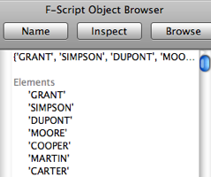Fig. 16. Browsing an array of strings.
However, there is much more to it than that...
If you want to inspect a collection, you can double-click on it or use the Inspect button, and F-Script will open the collection inspector, a module which enables you to explore and browse collections of objects. The collection inspector presents the content in an NSTableView: each row corresponds to an element in the collection. There may be an additional column. If the collection is an NSArray, the additional column will contain the index of each element. If you are inspecting an NSDictionary, you will see the key for each element. If it is an NSCountedSet, then you will see the counter for each object.

Fig. 17. Inspecting a dictionary with the collection inspector.
It is possible to add columns to a collection inspector. Clicking on the Add
button will bring up a new column and a block inspector. Each column is
associated with an F-Script code block, which can be edited. The
simplest blocks are concerned with sending a simple message without
arguments. For example, to add a column showing the class of each
element in a collection, you enter the expression #class in
the block inspector ("class" being the name of the method that returns
an object's class). Another example: if you are inspecting a collection
of numbers and want to have a column showing the square root of each
element, you would enter #sqrt in the block inspector.
Naturally, it is possible to associate an arbitrarily complex expression
with a column. For instance, if you want to have a column showing
whether the element is an NSView, you would enter the block: [:element| element isKindOfClass:NSView].
A column can be selected by clicking its header. Once selected, the related block can be modified via the Modify button, which opens the block inspector. The selected column can also be deleted using the Remove button.
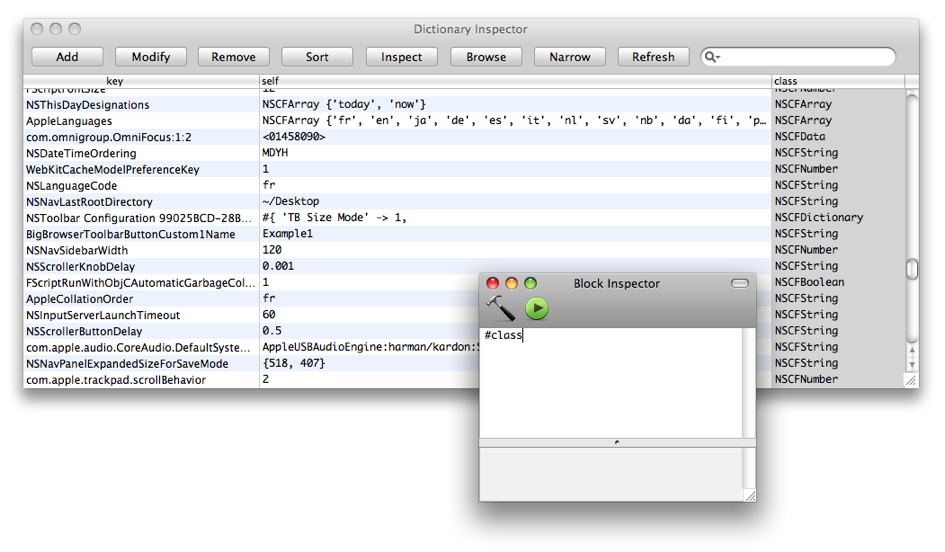Fig. 18. Configuring columns to view different aspects of elements in the collection.
The Sort button is used to sort elements in the collection in ascending order. This sorts the values in the selected column (it does not modify the collection itself, but only the way it is displayed in the inspector). Sorting uses the standard F-Script sort framework. The sorting process is "stable" and can be applied to several columns. For instance, if you have one column for first names and one for last names, you can sort the collection by last name and then sort it by first name for elements with identical last names (to do so, first sort by the first name column, then by the last name column).
The search field in the toolbar lets you filter the elements in the collection that are displayed in the inspector. This field works like the one in iTunes: an element is selected if the character string entered in the search field is present somewhere in the row in the inspector that corresponds to the element.
By combining sorting and filtering, you can easily select the elements in a collection that you want to examine more closely or manipulate, according to your own specific criteria. There appear to be some restrictions if you want to choose elements according to several successive filters and/or several primary sorting operations. Fortunately, the Narrow button gets around this problem, as it opens a new collection inspector containing only the elements currently selected. In this new inspector, you can then apply a new filter and/or sort.
You can inspect an element in the collection by double-clicking on the corresponding row, or by selecting the row and clicking the Inspect button. Likewise, you can inspect all the objects in a particular column by double-clicking the column header or selecting the column and using the Inspect button.
To open an object browser for an element in the collection, select the relevant row and use the Browse button. A browser can also be opened for the objects in a particular column by selecting the column and clicking the Browse button.
Lastly, the Refresh button updates displayed data, in the event that it has been modified elsewhere.
The browser's toolbar can be customized using the standard toolbar customization system. You can also add your own buttons. A panel lets you assign a name and a custom F-Script block to each button. The block is executed when the button is pressed, thus giving you lots of freedom to define the button behavior.
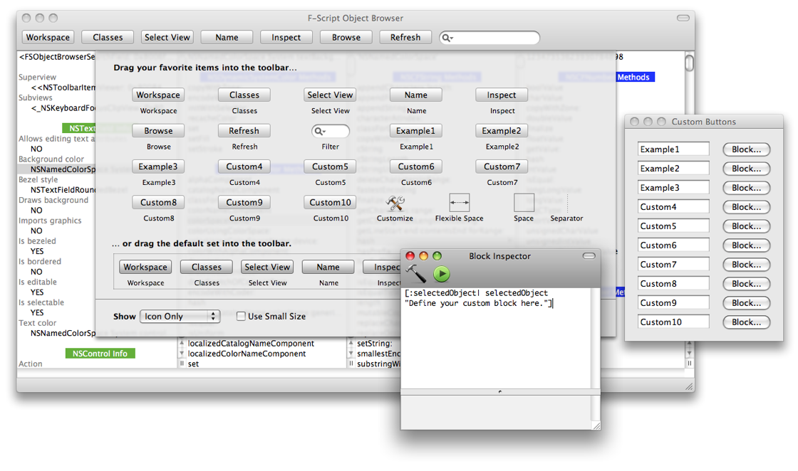Fig. 19. Customizing the browser's toolbar.
You can use three different kinds of block, depending on the purpose of your button:
debugDescription message to an object, you can associate the #debugDescription block with a new button in your toolbar.[:object| object isKindOfClass:NSView] with a new button in your toolbar.The customization tool provides examples illustrating these three kinds of blocks.
The custom configuration (i.e. button names and associated blocks) is automatically persisted.
Core Data Explorer is a technology in F-Script that extends the tools we have described so far and provides new tools for interactively exploring and manipulating the Mac OS X Core Data layer.
In order to browse a Core Data managed object graph, you first need to get hold of a managed object. If you don't have one to hand, F-Script provides, with the FSCoreDataSample class, a built-in managed object graph sample that you can use. It is based on the "Employee & Department" object model used in Apple's Core Data Programming Guide. The figure below shows that this model is made up of two entities (representing employees and departments) and a number of properties associated with these entities.
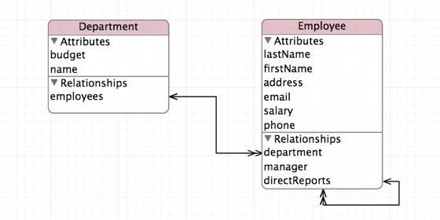Fig. 20. The sample Employee & Department data model.
To open the object browser for this sample, you can enter the following code in the F-Script shell:
sys browse:FSCoreDataSample managedObject
As you can see in figure 21, the object browser opens and displays information about your managed object.
It is also possible to open the object browser from Objective-C, using the FSInterpreter class which is part of the F-Script framework. For example:
[[FSInterpreter interpreter] browse:[FSCoreDataSample managedObject]];
The object browser displays the attributes and relationships of your managed object. For instance, if your object represents an employee, the browser will display their name, address, email, department, etc. The browser also displays various additional information about the object, such as its associated entity, object context, unique ID, etc. Finally, the browser displays the list of all methods implemented by the managed object.
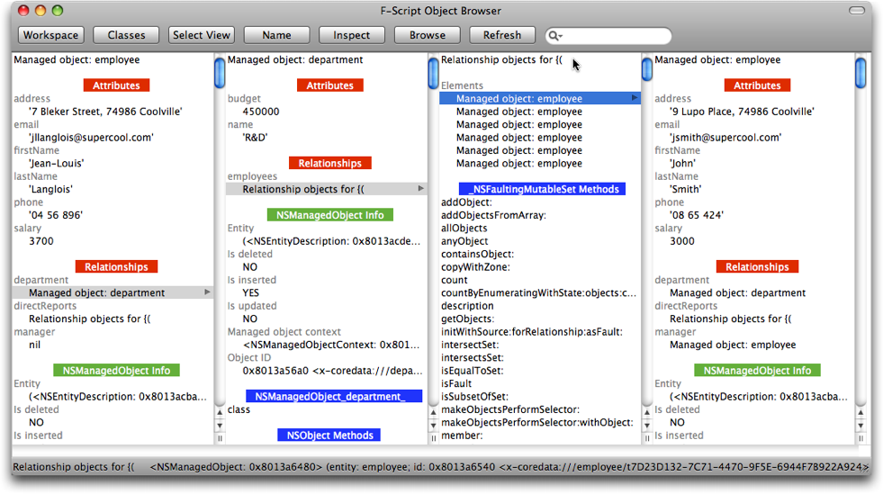Fig. 21. Browsing a managed object graph with the object browser.
Interactively navigating an object graph is then easy. When you click on an attribute or a relationship, the browser displays a new column that contains the selected object, allowing you to further delve into the object graph. As you can see, the browser lets you explore a whole managed object graph easily. This makes it a useful tool for exploratory programming and debugging with Core Data.
In addition to the properties of managed objects (i.e. attributes and relationships), the browser also lets you access and explore the whole Core Data stack. You can browse the object model, the object context, the persistent store coordinator, etc.
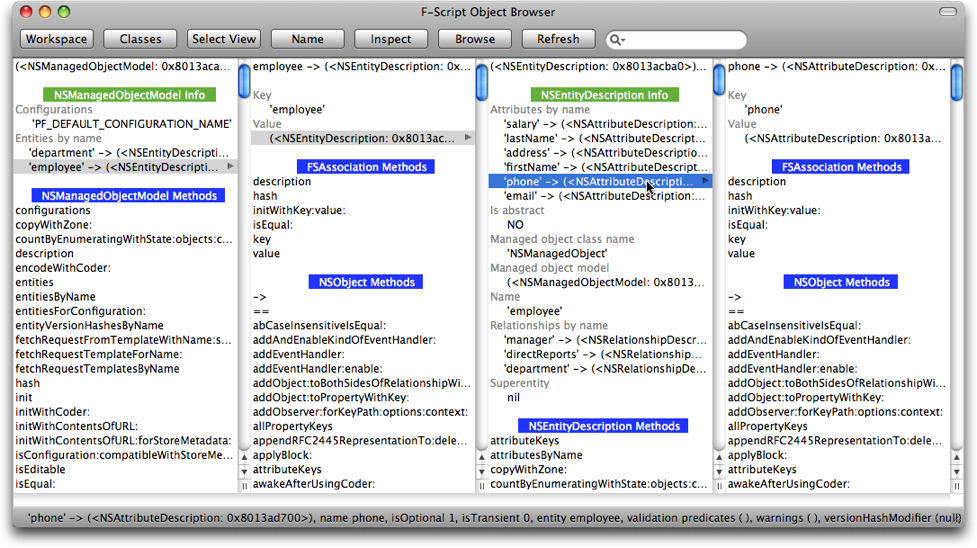Fig. 22. Browsing the object model description
As described at the beginning of this article, you can invoke methods as easily as you can browse the object graph. When you click on a method name, the method gets executed and the result is displayed in a new column of the browser.
The F-Script collection inspector described earlier in this article
leverages the introspection features provided by Core Data. You can open
it by double-clicking on a collection in the object browser, or
programmatically with the inspectWithSystem: method (see the F-Script guide).

Fig. 23. Inspecting a collection of managed objects with the collection inspector.
When the collection is made up of managed objects associated with the same entity, the collection inspector configures its columns automatically to display all the managed objects' properties, as shown in the screenshot above. In this example, the collection inspector displays a collection of managed objects representing employees: the inspector is automatically configured with columns for name, address, email, department etc.
The managed object context inspector lets you interactively query an NSManagedObjectContext using the predicate language introduced in Mac OS X 10.4. The easiest way to open a managed object context inspector is to double-click on it in the object browser; alternatively, you can open it programmatically. For instance, using the built-in Core Data sample of F-Script you can execute:.
FSCoreDataSample managedObject managedObjectContext inspectWithSystem:sys
The managed object context inspector enables you to explore a whole
managed object context. You can interactively enter Core Data predicates
and fetch objects from the persistent stores (the syntax of Core data
predicates is described in Apple's documentation for Core Data). In the
managed object context inspector shown in the figure below, we have
checked the "Fetch automatically" box, selected the "employee" entity,
and entered the predicate salary > 2000 AND department.name = 'R&D'.
Thus, the fetched objects represent employees whose salary is greater
than 2000 and who work for the R&D department. They are displayed in
a collection inspector view. In this way, you can use the functions of
the collection inspector to view and explore the fetched objects:

Fig 24. Interactively querying a managed object context using predicates.
The managed object context inspector keeps its display up-to-date regarding the values of fetched objects. Furthermore, if "fetch automatically" is enabled, the inspector will automatically fetch objects as you type a predicate or select an entity from the pop-up menu, or as managed objects are added, modified or removed from the object context.
F-Script lets you access all the Cocoa frameworks both graphically, using the object browser, and programmatically, using the F-Script language itself. Core Data is no exception. To illustrate this, we are going to fetch the employee objects programmatically. You can directly copy/paste the code provided below in the F-Script shell.
First, we need to get a managed object context from the F-Script built-in sample.
context := FSCoreDataSample managedObject managedObjectContext.
From this context, we get the entity object describing employees.
employeeEntity := context persistentStoreCoordinator managedObjectModel entitiesByName objectForKey:'employee'.
Now we need to create a fetch request. This is done with the following code:
request := NSFetchRequest alloc init.
request setEntity:employeeEntity.
Say we want to get the employee object sorted by last name. We can create a sort descriptor that will arrange the fetch results and add it to our fetch request.
sortDescriptor := NSSortDescriptor alloc initWithKey:'lastName' ascending:YES.
request setSortDescriptors:{sortDescriptor}.
Now we are ready to issue the fetch request and display the result in a collection inspector:
errorPtr := FSPointer objectPointer.
fetchResult := context executeFetchRequest:request error:errorPtr.
fetchResult == nil ifTrue:
[
stdout print:'Error while fetching: ' ++ (errorPtr at:0) localizedDescription.
]
ifFalse:
[
fetchResult inspectWithSystem:sys.
]
As this article has shown, F-Script provides an environment for easy exploring and handling of Objective-C objects. F-Script can be used as a standalone application, or integrated into your own application. This is done through an easy-to-use API and/or an Interface Builder palette provided by the F-Script framework. It is used in this way by various commercial and open source software. F-Script can also be dynamically injected into any Cocoa application at runtime. Thus, all the tools and techniques described in this article can be used with any Cocoa applications, be it your own or those of a third-party.
Copyright © 2006-2010 Philippe Mougin